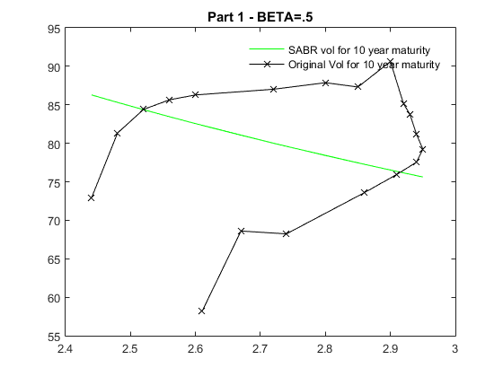
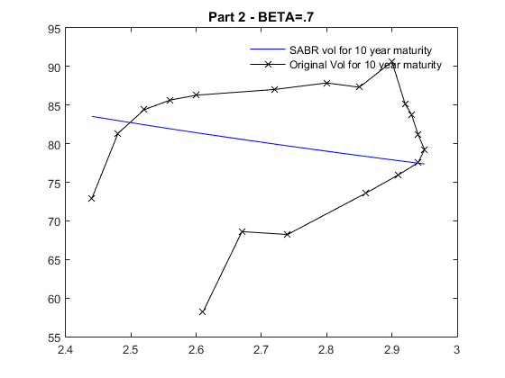
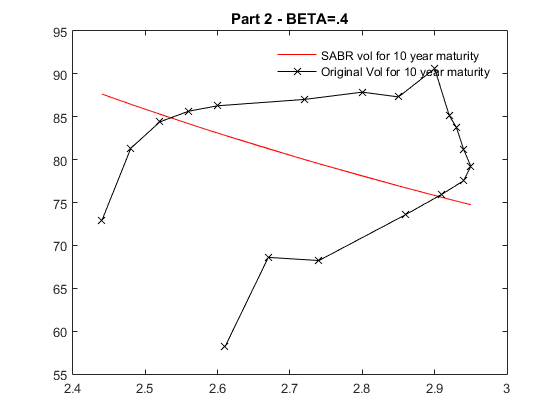

clc; clear;
fprintf('\n\n%%--------------------------------Part1--------------------------------%%\n')
k = 1;
oldMK = xlsread('swap_data.xlsx', 'Sheet1', 'C3:U3');
oldMV = xlsread('swap_data.xlsx', 'Sheet1', 'C4:U4');
T = xlsread('swap_data.xlsx', 'Sheet1', 'A4');
F = xlsread('swap_data.xlsx', 'Sheet1', 'B6');
oldMV = oldMV(k,:);
T = T(k);
Index = find(~isnan(oldMV));
MV = oldMV(Index);
MK = oldMK(Index);
MK2 = oldMK;
b = .5;
options = optimset('MaxFunEvals', 1e5, 'TolFun', 1e-8, 'TolX', 1e-10);
start = [.3 ,.3 ,.2];
[param1, feval] = fminsearch(@(par)EstimateAllParameters(par, MK, MV, F, T, b), start, options);
a = param1(1);
r = param1(2);
v = param1(3);
for j=1:length(MK2);
Vol1(j) = SABRvol(a, b, r, v, F, MK2(j), T);
end
X = sprintf('Beta=%f, Alpha=%f, Rho=%f, Vol=%f',b,a,r,v);
disp(X)
P=sprintf('Mean Squared Error=%f',immse(Vol1,oldMV));
disp(P)
figure
plot(MK2, Vol1, 'g-', oldMK, oldMV, 'kx-');
legend('SABR vol for 10 year maturity','Original Vol for 10 year maturity')
legend('boxoff')
title('Part 1 - BETA=.5')
fprintf('\n\n\n%%--------------------------------Part2--------------------------------%%\n')
b=.7;
start = [.3 ,.3 ,.2];
[param2, feval] = fminsearch(@(par)EstimateAllParameters(par, MK, MV, F, T, b), start, options);
a = param2(1);
r = param2(2);
v = param2(3);
for j=1:length(MK2);
Vol2(j) = SABRvol(a, b, r, v, F, MK2(j), T);
end
X = sprintf('Beta=%f, Alpha=%f, Rho=%f, Vol=%d',b,a,r,v);
disp(X)
P=sprintf('Mean Squared Error=%f',immse(Vol2,oldMV));
disp(P)
figure
plot(MK2, Vol2, 'b-', oldMK, oldMV, 'kx-');
legend('SABR vol for 10 year maturity','Original Vol for 10 year maturity')
legend('boxoff')
title('Part 2 - BETA=.7')
fprintf('\n')
b=.4;
start = [.3 ,.3 ,.2];
[param3, feval] = fminsearch(@(par)EstimateAllParameters(par, MK, MV, F, T, b), start, options);
a = param3(1);
r = param3(2);
v = param3(3);
for j=1:length(MK2);
Vol3(j) = SABRvol(a, b, r, v, F, MK2(j), T);
end
X = sprintf('Beta=%f, Alpha=%f, Rho=%f, Vol=%d',b,a,r,v);
disp(X)
P=sprintf('Mean Squared Error=%f',immse(Vol3,oldMV));
disp(P)
figure
plot(MK2, Vol3, 'r-', oldMK, oldMV, 'kx-');
legend('SABR vol for 10 year maturity','Original Vol for 10 year maturity')
legend('boxoff')
title('Part 2 - BETA=.4')
fprintf('\n\n\n%%--------------------------------Part3--------------------------------%%\n')
X = sprintf('Beta=.5, Alpha=%f, Rho=%f, Vol=%d',param1(1),param1(2),param1(3));
disp(X)
X = sprintf('Beta=.7, Alpha=%f, Rho=%f, Vol=%d',param2(1),param2(2),param2(3));
disp(X)
X = sprintf('Beta=.4, Alpha=%f, Rho=%f, Vol=%d',param3(1),param3(2),param3(3));
disp(X)
figure
plot(MK2, Vol1, 'g-',MK2, Vol2, 'b-',MK2, Vol3, 'r-', oldMK, oldMV, 'kx-');
legend('SABR vol with Beta=.5','SABR vol with Beta=.7','SABR vol with Beta=.4','Original Vol for 10 year maturity')
legend('boxoff')
title('Part 3 - Combined Plot with BETA=.5, BETA=.7 and BETA=.4')
fprintf('\n')
disp('Thus we can see that the vol is lowest for Beta=.5 and we get the highest alpha=16.38 for beta=.7')
disp('This shows that the optimum value lies in between beta=.5 and beta=.7')
disp('In our analysis we thus have further evidence as the best fit model has beta close to .7')
fprintf('\n\n\n%%--------------------------------Part4--------------------------------%%\n')
fun=(EstimateAllParameters(param1, MK, MV, F, T, .5));
fprintf('For beta=.5, the minima of the optimized function=%d\n',fun)
P=sprintf('Mean Squared Error=%f\n',immse(Vol1,oldMV));
disp(P)
fun=(EstimateAllParameters(param2, MK, MV, F, T, .7));
fprintf('For beta=.7, the minima of the optimized function=%d\n',fun)
P=sprintf('Mean Squared Error=%f\n',immse(Vol2,oldMV));
disp(P)
fun=(EstimateAllParameters(param3, MK, MV, F, T, .4));
fprintf('For beta=.4, the minima of the optimized function=%d\n',fun)
P=sprintf('Mean Squared Error=%f\n',immse(Vol3,oldMV));
disp(P)
fprintf('\n')
disp('We can see that with beta of .7, we get the minimum of the function which we have minimized above')
disp('Also we can see that the mean squared with the original data is lowest for the model with beta=.7')
fprintf('\n\n\n%%--------------------------------Part5--------------------------------%%\n')
b=.7;
start = [.3 ,.3 ,.2];
[param2, feval] = fminsearch(@(par)EstimateAllParameters(par, MK, MV, F, T, b), start, options);
a = param2(1);
r = param2(2);
v = param2(3);
oldMK = xlsread('swap_data.xlsx', 'Sheet1', 'C19:U19');
oldMV = xlsread('swap_data.xlsx', 'Sheet1', 'C20:U20');
T = xlsread('swap_data.xlsx', 'Sheet1', 'A20');
F = xlsread('swap_data.xlsx', 'Sheet1', 'B23');
oldMV = oldMV(k,:);
T = T(k);
Index = find(~isnan(oldMV));
MV = oldMV(Index);
MK = oldMK(Index);
MK2 = oldMK;
for j=1:length(MK2);
Vol2(j) = SABRvol(a, b, r, v, F, MK2(j), T);
end
X = sprintf('Beta=%f, Alpha=%f, Rho=%f, Vol=%f',b,a,r,v);
disp(X)
fun=(EstimateAllParameters(param2, MK, MV, F, T, .7));
fprintf('For beta=.7, the minima of the optimization function=%d\n',fun)
P=sprintf('Mean Squared Error=%f\n',immse(Vol2,oldMV));
disp(P)
figure
plot(MK2, Vol2, 'b-', oldMK, oldMV, 'kx-');
legend('SABR vol for 12 year maturity','Original Vol for 12 year maturity')
legend('boxoff')
title('Part 5 - BETA=.7')
disp('From the minimized function value, the mean squared error and from the plot,')
disp('we can see that the SABR parameters obtained from 10year swap can manage to fit the 12 year swap to an extent')
%--------------------------------Part1--------------------------------%
Beta=0.500000, Alpha=14.838595, Rho=-0.930819, Vol=0.004204
Mean Squared Error=90.367733
%--------------------------------Part2--------------------------------%
Beta=0.700000, Alpha=16.638037, Rho=-0.966216, Vol=8.783786e-15
Mean Squared Error=77.500020
Beta=0.400000, Alpha=14.621070, Rho=-0.783235, Vol=6.844429e-15
Mean Squared Error=98.391854
%--------------------------------Part3--------------------------------%
Beta=.5, Alpha=14.838595, Rho=-0.930819, Vol=4.204022e-03
Beta=.7, Alpha=16.638037, Rho=-0.966216, Vol=8.783786e-15
Beta=.4, Alpha=14.621070, Rho=-0.783235, Vol=6.844429e-15
Thus we can see that the vol is lowest for Beta=.5 and we get the highest alpha=16.38 for beta=.7
This shows that the optimum value lies in between beta=.5 and beta=.7
In our analysis we thus have further evidence as the best fit model has beta close to .7
%--------------------------------Part4--------------------------------%
For beta=.5, the minima of the optimized function=1.716987e+03
Mean Squared Error=90.367733
For beta=.7, the minima of the optimized function=1.472500e+03
Mean Squared Error=77.500020
For beta=.4, the minima of the optimized function=1.869445e+03
Mean Squared Error=98.391854
We can see that with beta of .7, we get the minimum of the function which we have minimized above
Also we can see that the mean squared with the original data is lowest for the model with beta=.7
%--------------------------------Part5--------------------------------%
Beta=0.700000, Alpha=16.638037, Rho=-0.966216, Vol=0.000000
For beta=.7, the minima of the optimization function=5.388329e+03
Mean Squared Error=283.596258
From the minimized function value, the mean squared error and from the plot,
we can see that the SABR parameters obtained from 10year swap can manage to fit the 12 year swap to an extent
  